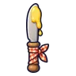 มีดคู่ทาเนย | 1 | 33 | ไม่มีธาตุ | หนูนาขโมยข้าว 0.25% |
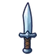 มีดคู่เงา | 1 | 31 | ไม่มีธาตุ | อาวุธเริ่มต้นของสาย (ได้ตอนเปลี่ยนอาชีพ) |
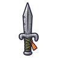 มีดคู่หมุดเต็นท์ | 4 | 34 | ไม่มีธาตุ | ไก่ป่าเจ้าอารมณ์ 0.25% |
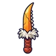 มีดคู่จะงอยห่านคลั่ง | 4 | 31 | ลม | ห่านคลั่ง ร่างจะงอยคราม 0.24% |
 มีดคู่ลิ้นกบ มีดคู่ลิ้นกบ | 6 | 31 | น้ำ | กบบึงใส 0.12% |
 มีดคู่หินไฟ มีดคู่หินไฟ | 9 | 34 | ไฟ | แม่มดเทียนไข 0.25% |
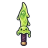 มีดคู่เยลลี่สไลม์ | 11 | 30 | พิษ | สไลม์เรืองแสง 0.06% |
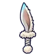 มีดคู่หูกระต่ายเงาจันทร์ | 14 | 31 | ลม | กระต่ายเงาจันทร์ ร่างจันทร์ดับ 0.24% |
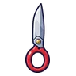 มีดคู่กรรไกรยักษ์ | 14 | 31 | ไม่มีธาตุ | หมาป่าเงาจันทร์ ร่างน้ำค้างแข็ง 0.12% |
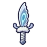 มีดคู่ปีกผีเสื้อราตรี | 18 | 30 | ลม | ผีเสื้อราตรีเรืองแสง 0.06% |
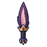 มีดคู่หูราชาค้างคาว | 22 | 41 | มืด | ราตรีราชาค้างคาว 0.5% |
 มีดคู่นายพราน มีดคู่นายพราน | 26 | 56 | ไม่มีธาตุ | ม้ากลวง 0.25% |
 มีดคู่ขนเม่น มีดคู่ขนเม่น | 30 | 54 | ไม่มีธาตุ | เม่นแตกตัว 0.25% |
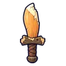 มีดคู่ฟันบีเวอร์บิ่น | 32 | 54 | ดิน | บีเวอร์แทะไม้ ร่างฟันทอง 0.5% |
 มีดคู่ว่าวกระดาษ มีดคู่ว่าวกระดาษ | 32 | 50 | ลม | ภูตลมหมุน 0.12% |
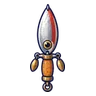 มีดคู่เหยื่อตกปลา | 34 | 55 | ไม่มีธาตุ | หมาป่าเห็ดจ่าฝูง 0.25% |
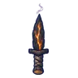 มีดคู่ถ่านคุ | 36 | 48 | ไฟ | ตอไม้ถ่านคุ 0.06% |
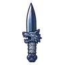 มีดคู่หมาป่าเงาจันทร์ | 38 | 50 | มืด | หมาป่าเงาจันทร์ 0.12% |
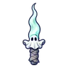 มีดคู่ผีผ้าห่ม | 40 | 48 | วิญญาณ | ผีดวงไฟ 0.06% |
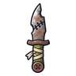 มีดคู่ชาวนาซอมบี้ | 42 | 50 | ไม่มีธาตุ | ซอมบี้ชาวนา 0.12% |
 มีดโค้งคนนำทางรากดำ มีดโค้งคนนำทางรากดำ | 44 | 53 | ศักดิ์สิทธิ์ | บอสผู้ถูกรากสิง |
| มีดคู่เมล็ดทานตะวัน | 44 | 48 | ศักดิ์สิทธิ์ | ดอกไม้ยิงเมล็ด 0.06% |
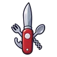 มีดคู่พับอเนกประสงค์ | 46 | 50 | ไม่มีธาตุ | งูหนองพิษ ร่างพิษแดง 0.12% |
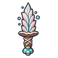 มีดคู่ครีบราชาเห็ด | 48 | 65 | พิษ | ราชาเห็ดเรืองแสง 0.5% |
| มีดคู่อำพันนางพญามด | 50 | 65 | ดิน | รังนางพญามด 0.5% |
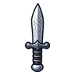 มีดคู่เหล็กลายน้ำ | 52 | 76 | ไม่มีธาตุ | นกฮูกหิน 0.25% |
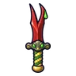 มีดคู่ลิ้นงูหนอง | 55 | 68 | พิษ | งูหนองพิษ 0.12% |
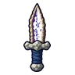 มีดคู่หินโพรงผลึก | 58 | 73 | ไม่มีธาตุ | ก้อนแมกมาแตกตัว 0.25% |
 มีดคู่จิ้งจอกเงียบงัน มีดคู่จิ้งจอกเงียบงัน | 60 | 65 | มืด | จิ้งจอกเงียบงัน 0.06% |
 มีดคู่หินแม่เหล็ก มีดคู่หินแม่เหล็ก | 60 | 65 | ดิน | นกแร้งหิน 0.06% |
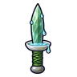 มีดคู่จานน้ำกัปปะ | 62 | 68 | น้ำ | กัปปะหนองหมอก 0.12% |
 มีดคู่เหล็กแดงเตาหลอม มีดคู่เหล็กแดงเตาหลอม | 64 | 65 | ไฟ | โกเลมลาวา 0.06% |
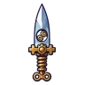 มีดคู่ฟันเฟือง | 66 | 68 | ไม่มีธาตุ | มือหุ่นยักษ์ 0.12% |
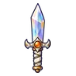 มีดคู่ผลึกปริซึม | 68 | 65 | ศักดิ์สิทธิ์ | ทหารวิหาร 0.06% |
 มีดคู่ภูตหมอกเงา มีดคู่ภูตหมอกเงา | 70 | 68 | มืด | ภูตหมอกเงา 0.12% |
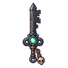 มีดคู่กุญแจราชาสุสาน | 74 | 89 | วิญญาณ | บัลลังก์ราชาสุสาน 0.5% |
 มีดคู่ปัดป้ององครักษ์ มีดคู่ปัดป้ององครักษ์ | 78 | 92 | ไม่มีธาตุ | หุ่นไร้หน้า 0.25% |
 มีดคู่ดอกราตรีพิษ มีดคู่ดอกราตรีพิษ | 80 | 87 | พิษ | หนูคลอง 0.12% |
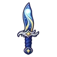 มีดคู่ดาวหาง | 82 | 84 | ไม่มีธาตุ | ตู้เอกสารโล่ 0.06% |
 มีดคู่นกไนติงเกล มีดคู่นกไนติงเกล | 84 | 95 | ลม | เทอโรซอร์ 0.25% |
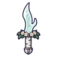 มีดคู่เขากวางวิญญาณ | 86 | 84 | วิญญาณ | ผู้จุดตะเกียงรุ่นแรก 0.06% |
 มีดคู่ไดโนขโมยไข่ มีดคู่ไดโนขโมยไข่ | 88 | 93 | ดิน | ไดโนขโมยไข่ ร่างขนชมพู 0.5% |
 มีดคู่หางอิมป์ มีดคู่หางอิมป์ | 88 | 87 | ไฟ | อิมป์เปลวไฟ 0.12% |
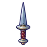 มีดคู่จานกลมอัศวิน | 90 | 92 | ไม่มีธาตุ | ตู้เอกสารโล่ 0.25% |
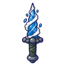 มีดคู่น้ำวน | 92 | 84 | น้ำ | ลูกมังกรไพร 0.06% |
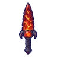 มีดคู่เกล็ดมังกรลาวา | 95 | 114 | ไฟ | หัวใจมังกรลาวา 0.5% |
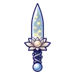 มีดคู่หิ่งห้อยแสงจันทร์ | 99 | 124 | น้ำ | ดรอปทั่วโลก Lv 90+ |